Une seconde.
C’est le temps qu’il faut pour se poser la question avant d’ouvrir une application par réflexe. Ni interdiction, ni jugement : juste un instant pour décider si vous voulez vraiment les ouvrir.
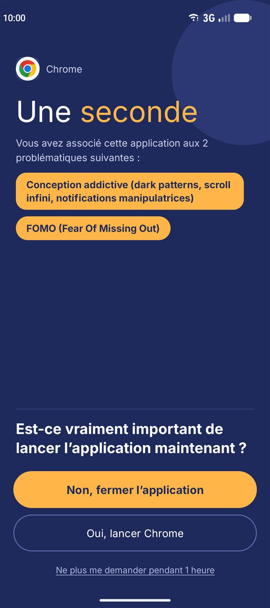
Vos applications, vos valeurs
Certaines applications revendent vos données, vous gardent captif-ve ou reposent sur des conditions de travail contestables. Vous choisissez les problématiques qui comptent pour vous et les applications concernées. À chaque ouverture d’une de ces applications, un court écran vous rappelle pourquoi — et vous laisse décider.
100 % local
Tout reste sur votre téléphone.
Aucun suivi
Pas de compte, pas de publicités.
Logiciel libre
Publié sous licence GPL v3 : chacun peut lire le code et vérifier ce que fait l’application.
C’est vous qui décidez
Pas de liste d’applications « mauvaises », pas de verdict. Vous choisissez vos problématiques et vos applications.
Trois étapes
Choisissez les problématiques qui comptent pour vous
Piochez parmi 23 problématiques toutes prêtes, réparties en 7 thèmes — bien-être mental, éthique sociale, environnement, vie privée, etc. — ou ajoutez les vôtres.
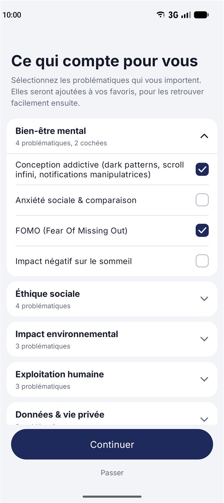
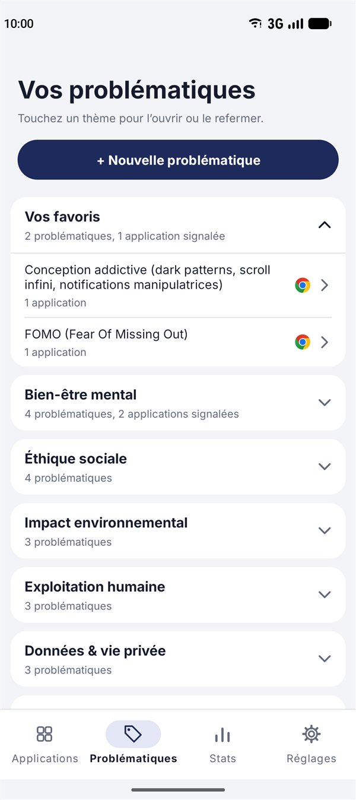
Signalez vos applications
Choisissez une application dans la liste et cochez les problématiques qu’elle soulève.
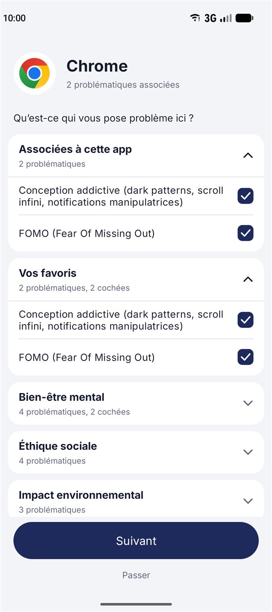
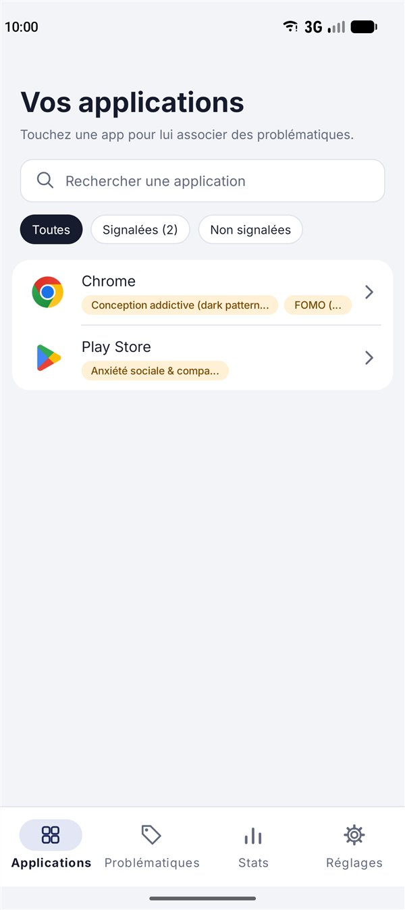
Prenez une seconde avant de les ouvrir
Quand vous ouvrez une application signalée, un court écran vous rappelle les problématiques que vous lui avez associées. Vous pouvez fermer l’application, l’ouvrir quand même, ou demander à ne plus être sollicité pendant un temps.
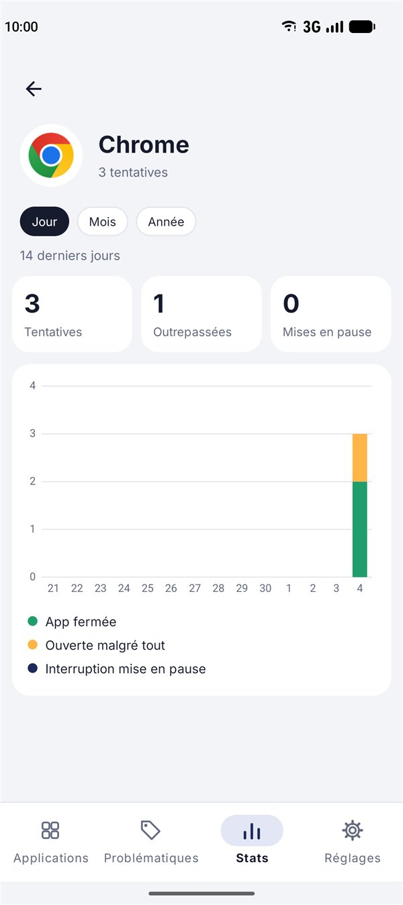
Un coup d’œil à l’intérieur
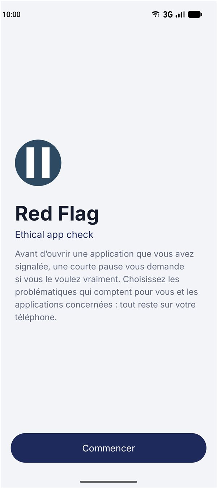
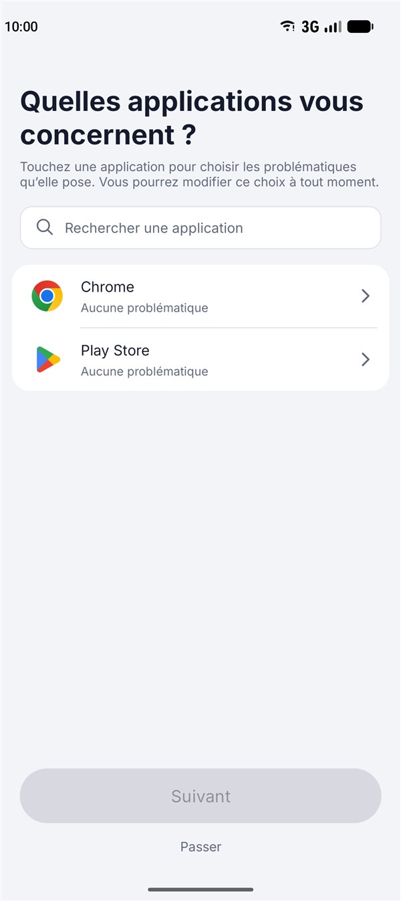
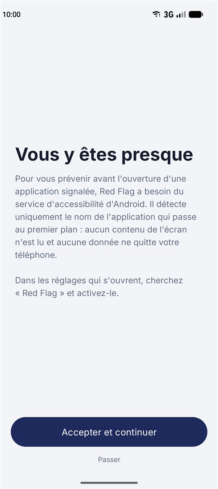
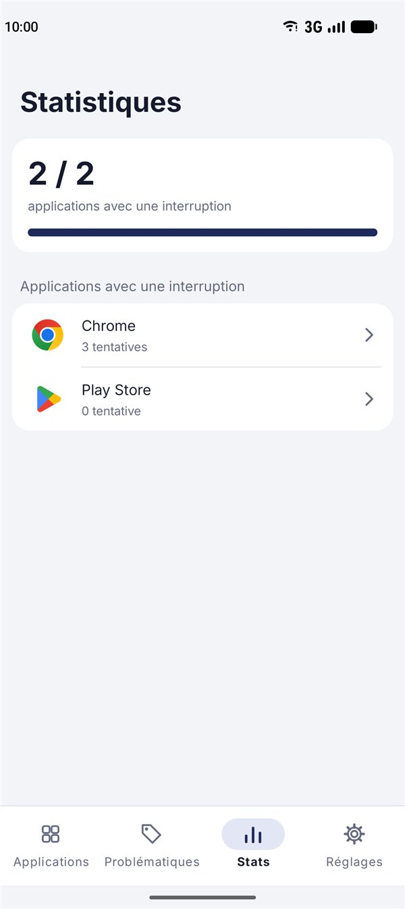
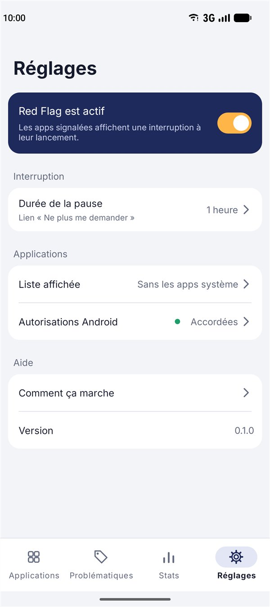
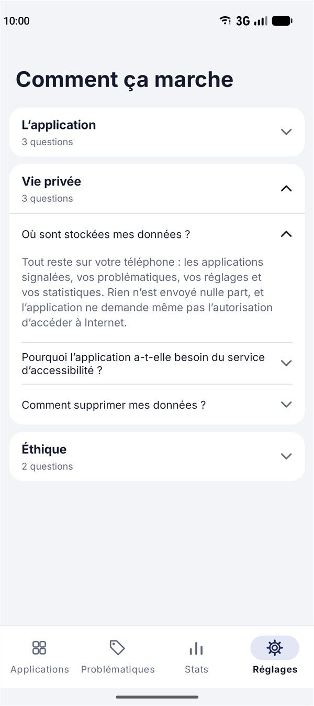
Questions fréquentes
L’application3 questions
À quoi sert cette application ?
Quand vous ouvrez une application que vous avez signalée à cause d’un problème éthique (revente de données, conception addictive, exploitation de travailleurs…), un court écran vous demande si vous voulez vraiment l’ouvrir.
Il n’interdit rien : il ajoute seulement un instant de réflexion, pour que l’usage de l’application soit un choix plutôt qu’un réflexe.
Comment signaler une application ?
Dans l’onglet Applications, touchez une application et cochez les problématiques qui vous concernent. Vous pouvez aussi partir d’une problématique, dans l’onglet Problématiques, et y associer plusieurs applications. S’il en manque une, vous pouvez ajouter la vôtre.
Que font les boutons de l’écran d’interruption ?
« Non, fermer l’application » vous ramène à l’écran d’accueil.
« Oui, lancer l’application » l’ouvre, et on ne vous redemande rien pendant 15 minutes après votre dernière utilisation, même si vous fermez l’application par erreur et la rouvrez. Ce choix est oublié plus tôt si l’écran s’éteint.
Le lien « Ne plus me demander pendant… » met l’interruption en pause pour cette application, pour la durée choisie dans les Réglages.
Vie privée3 questions
Où sont stockées mes données ?
Tout reste sur votre téléphone : les applications signalées, vos problématiques, vos réglages et vos statistiques. Rien n’est envoyé nulle part, et l’application ne demande même pas l’autorisation d’accéder à Internet.
Pourquoi l’application a-t-elle besoin du service d’accessibilité ?
C’est le seul moyen qu’Android donne à une application de savoir quelle application vient de passer au premier plan, pour afficher l’interruption au bon moment.
Le service ne lit ni ce qui s’affiche à l’écran ni ce que vous tapez : il ne voit que le nom de l’application qui s’ouvre. Vous pouvez le désactiver à tout moment dans les réglages d’Android.
Comment supprimer mes données ?
Désinstaller l’application efface tout. Vous pouvez aussi vider son stockage depuis les réglages d’Android, dans la page d’informations de l’application.
Éthique2 questions
Qui décide quelles applications posent problème ?
C’est vous. L’application ne rend aucun verdict et ne tient aucune liste d’applications « mauvaises » : vous choisissez, parmi une liste de problématiques ou les vôtres, celles qui comptent pour vous.
S’agit-il d’un logiciel libre ?
Oui. L’application est publiée sous licence GPL v3, sans publicité et sans suivi.
Politique de confidentialité
En bref : l’application garde tout sur votre téléphone et n’envoie rien nulle part.
Ce que l’application enregistre
Uniquement sur votre téléphone : les applications que vous avez signalées, vos problématiques et favoris, vos réglages, et des statistiques sur vos propres choix (combien de fois la pause est apparue et ce que vous avez répondu). Rien n’est envoyé, ni à nous ni à quiconque, et rien n’est inclus dans les sauvegardes cloud d’Android.
Ce que l’application ne fait pas
- Elle n’a pas l’autorisation d’accéder à Internet : elle ne peut envoyer aucune donnée par le réseau.
- Elle n’a ni compte, ni statistiques d’usage, ni publicité, ni suivi par des tiers.
- Elle ne lit ni le contenu de votre écran, ni ce que vous tapez, ni vos messages.
Le service d’accessibilité
Pour afficher la pause au bon moment, l’application utilise le service d’accessibilité d’Android. Il détecte uniquement le nom de l’application qui passe au premier plan. Il ne lit pas le contenu de l’écran, et ce nom sert seulement, sur votre téléphone, à décider s’il faut afficher la pause. Vous pouvez désactiver le service à tout moment dans les réglages d’Android.
Supprimer vos données
Désinstaller l’application efface tout. Vous pouvez aussi vider son stockage depuis les réglages d’Android.
Contact
Une question sur cette politique ? Écrivez-nous avec le formulaire de contact.
Dernière mise à jour : octobre 2026.
Obtenir l’application
Red Flag fonctionne sur Android 8.0 et plus. Elle sera disponible sur Google Play ; d’ici là, des versions de test sont partagées sur demande.
Bientôt sur Google Play
Écrivez-nous
Une question, un bug, une idée, une version de test ? Envoyez-nous un message.
Vous pouvez aussi écrire directement à example@email.com.